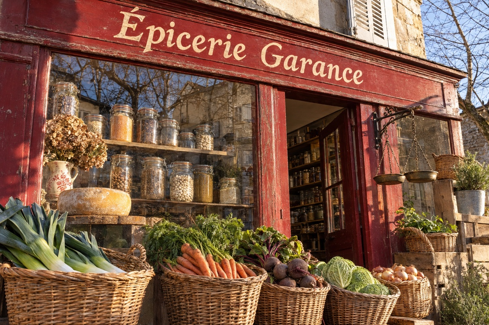
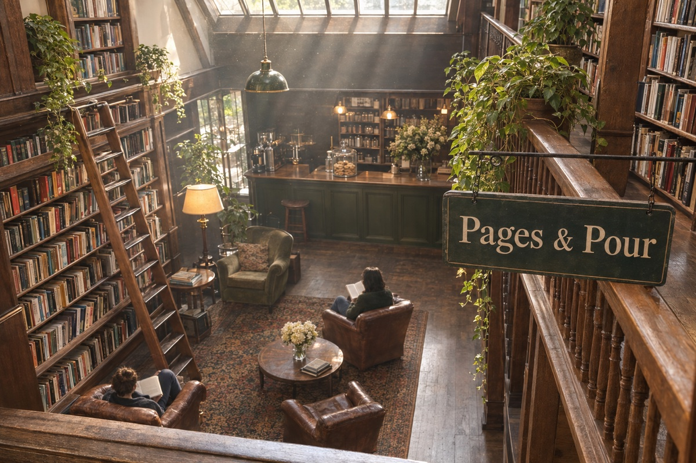
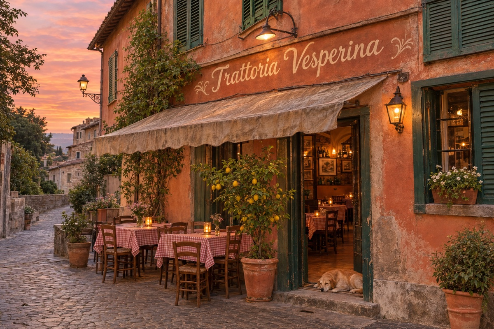
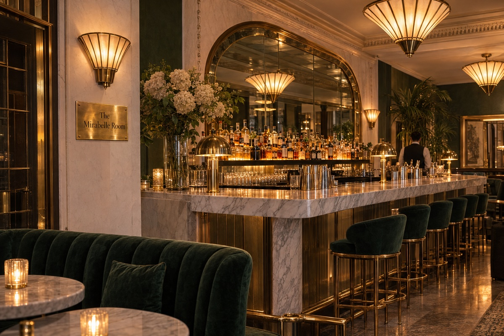
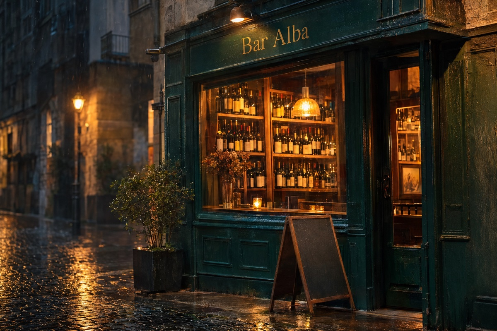

Le Petit Sillon

A small café on a quiet dead-end lane, with a few pavement tables and a hand-built counter. The owner roasts her own beans in the back room and serves them as espresso, long black or filter.
A small local listing of cafés, bakeries, bistros and bars that have opened or are about to open, newest first.
A small café on a quiet dead-end lane, with a few pavement tables and a hand-built counter. The owner roasts her own beans in the back room and serves them as espresso, long black or filter.

A neighbourhood deli and cheese counter with a short lunch menu of sandwiches and soups. A single-origin filter coffee is brewed in the morning and sold alongside the pastries, to take away only.

A bookshop with a café counter at the back and armchairs between the shelves. They pull a flat white and a good filter coffee all day, and the loyalty card gets you every tenth cup free.

A family-run trattoria with a hand-rolled pasta counter and a wood-panelled dining room. Dinner ends with an espresso from a lever machine, and the owners will happily pull a caffè corretto on request.

The new bar of a restored boutique hotel, with velvet banquettes and a long marble counter. Guests can order proper espresso, an affogato or a coffee cocktail, and the morning coffee service is open to non-residents.

A wood-fired bistro on the canal with a counter facing the open kitchen. Coffee arrives as a pour-over or a cortado at the end of a meal, brewed from a house blend roasted nearby.

A large, bright boulangerie with a viennoiserie counter and a few tables by the window. Coffee is served as a proper café crème or a double espresso, and the croissants are baked on site every morning.

A tiny natural-wine bar with a short menu of small plates and a changing list by the glass. There is no espresso machine, only a stove-top moka pot brought out for anyone who asks for coffee after dinner.

A relaxed neighbourhood bistro in a former shoemaker's workshop, with a courtyard behind. Lunch comes with a good cup of filter coffee, and the courtyard stays open for coffee and pastries through the afternoon.

A narrow, tiled Italian-style café with a zinc counter and a handful of stools by the window. Coffee is the point here: a short menu of espresso, macchiato and filter from a single roaster, all poured by the owner herself.